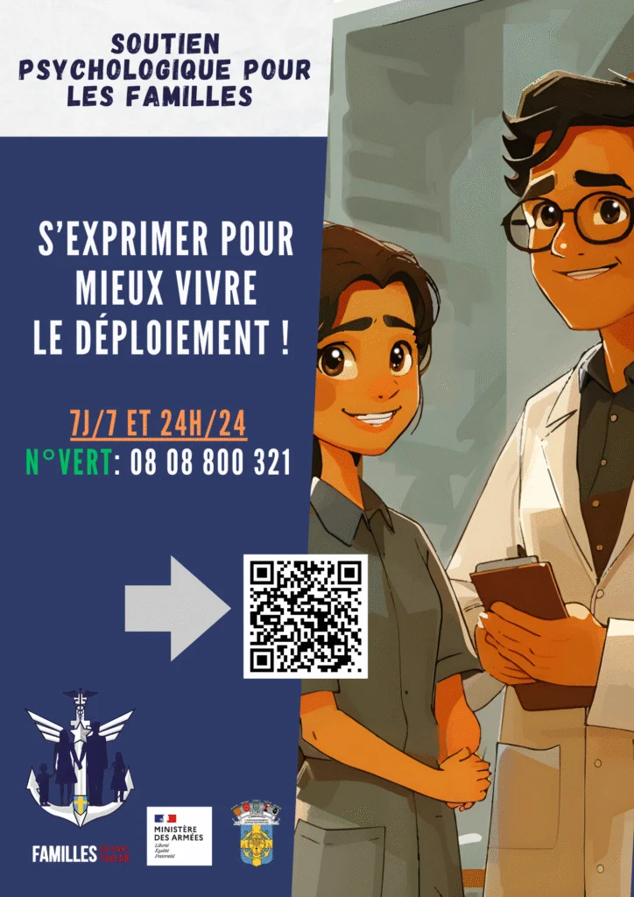
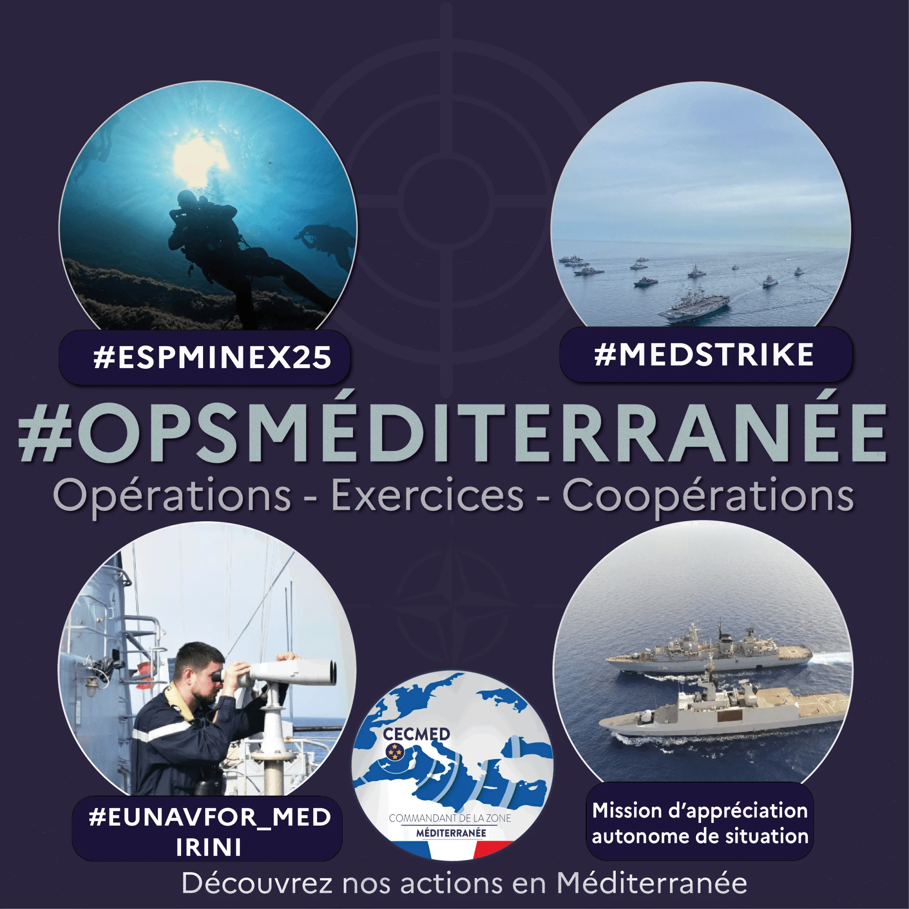

Marine nationale / Préfecture maritime de la Méditerranée
Expérience professionnelle
Cette page rassemble les principaux travaux réalisés dans le cadre de la mission menée à la Préfecture maritime : supports de communication, formats éditoriaux, publications réseaux sociaux et productions vidéo intégrées directement au portfolio.

Préfecture maritime de la Méditerranée
Support de communication
Affiches et campagnes d'information à destination des familles et des publics, avec un message direct et lisible.
Veille institutionnelle
Revue de presse
Synthèses éditoriales et pages de veille préparées pour une lecture rapide des actualités et des sujets suivis.

Formats réseaux
Réseaux sociaux
Publications, stories, carrousels et bilans visuels adaptés aux usages des comptes institutionnels.

Formats complémentaires
Visuels & infographies
Exports, variantes de mise en page et visuels complémentaires utilisés dans les campagnes et les publications.
Montage / teasers / reels
Vidéos & formats courts
L'ensemble des fichiers vidéo du dossier armée est intégré dans une page dédiée, avec reportages, capsules courtes, reels et exports complémentaires.